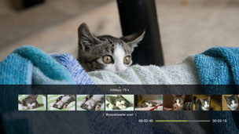
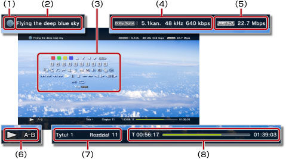

Wideo > Korzystanie z panelu sterowania
Using the control panel
Korzystanie z panelu sterowania
Za pomocą wyświetlanego na ekranie panelu sterowania można wykonywać różne operacje. Panel sterowania można wyświetlać lub ukrywać przez naciśnięcie przycisku  .
.
Ikony wyświetlane na tej stronie są zdefiniowane jak następuje:
 |
Pliki wideo nagrane na płycie Blu-ray (BD) tylko do odczytu |
|---|---|
 |
Pliki wideo nagrane na płycie BD do wielokrotnego zapisu |
 |
Pliki wideo nagrane w formacie AVCHD |
 |
|
 |
Pliki wideo nagrane w trybie VR na płycie DVD-R / DVD-RW |
 |
Pliki wideo zapisane na dysku twardym |
 |
Pliki wideo zapisane na nośniku pamięci* |
| * |
W przypadku niektórych modeli do korzystania z nośników pamięci wymagana jest odpowiednia przejściówka USB (niedołączona do zestawu). |
|---|
Informacja
Dla danej zawartości mogą obowiązywać warunki odtwarzania określone przez jej twórców. W takich przypadkach niektóre elementy panelu sterowania mogą być niedostępne.
Czerwone / zielone / niebieskie / Żółte ikony


Umożliwiają wykonanie operacji przypisanej do ikony. Funkcje przypisane do ikon różnią się w zależności od odtwarzanej zawartości.
W górę / W dół / Lewy / Prawy
Wejście
Zatwierdzanie wybranego elementu.
Klawiatura numeryczna

Umożliwiają wprowadzanie liczb.
Menu podręczne
Umożliwia wyświetlanie menu podręcznego.
Menu
Wyświetlanie menu.
Menu początkowe
Umożliwia wyświetlanie menu początkowego.
Powrót
Umożliwia powrót do określonego miejsca w pliku wideo.
Wyszukiwanie scen


Ta funkcja służy do wyświetlania miniatur utworzonych w określonych odstępach czasu. W celu uruchomienia odtwarzania wideo od określonej sceny należy wybrać miniaturę.

1. |
Do wybrania czasu, co jaki są tworzone miniatury, służą przyciski |
|---|
 lub
lub  . Można wybrać opcję [Rozdział] lub jeden z kilku przedziałów czasu.
. Można wybrać opcję [Rozdział] lub jeden z kilku przedziałów czasu.2. |
Do wybrania miniatury dla oglądanej sceny służą przyciski |
|---|
 lub . Odtwarzanie jest rozpoczynane od wybranej sceny.
lub . Odtwarzanie jest rozpoczynane od wybranej sceny.Wskazówki
- Opcję [Rozdział] można wybrać tylko dla zawartości wideo zawierającej informacje o rozdziałach.
- Funkcji wyszukiwania scen nie można używać w przypadku materiałów krótszych niż jedna minuta.
- Funkcji wyszukiwania scen nie można używać dla niektórych typów zawartości wideo.
- Po wybraniu miniatury przez około 15 sekund wyświetlany jest podgląd sceny.
Przejdź do


Umożliwia odtwarzanie od wybranego rozdziału lub określonej wartości czasu.
| Tytuł X | Umożliwia określenie numeru tytułu. |
|---|---|
| Rozdział X | Umożliwia określenie numeru rozdziału. |
| XX:XX / XX:XX:XX | Umożliwia określenie wartości czasu. |
Wskazówka
W zależności od pliku wideo opcja (Przejdź do) może być niedostępna.
Opcje kąta kamery
W przypadku odtwarzania zawartości nagranej z wykorzystaniem kilku kątów ustawienia kamery można wybrać jeden z nich.
Opcje dźwięku
W przypadku odtwarzania zawartości nagranej z wieloma ścieżkami dźwiękowymi można wybrać jedną z dostępnych opcji dźwięku.
Opcje napisów
W przypadku odtwarzania zawartości nagranej z napisami w kilku językach można wybrać jedną z dostępnych opcji napisów.
Opcje stylu napisów
W przypadku odtwarzania zawartości nagranej z napisami w kilku stylach można wybrać jedną z dostępnych opcji wyświetlania napisów.
Regulacja głośności
Umożliwia dostosowanie poziomu głośności odtwarzania zawartości w kategorii  (Wideo). Można wybrać jeden z dziewięciu poziomów.
(Wideo). Można wybrać jeden z dziewięciu poziomów.
Wskazówki
- Jeśli poziom głośności dźwięku jest za wysoki, dźwięk może być zniekształcony. W takim przypadku należy zmniejszyć poziom głośności dźwięku.
- Ustawienie może być niedostępne podczas korzystania z niektórych urządzeń audio lub odtwarzania niektórych formatów audio.
Ustawienia audio/wideo
Umożliwia dostosowanie ustawień dotyczących odtwarzania zawartości w kategorii (Wideo). Wyświetlane elementy różnią się w zależności od odtwarzanej zawartości.
| Redukcja zniekształceń klatkowych | Zmniejszanie drobnych zniekształceń. |
|---|---|
| Redukcja zniekształceń blokowych | Zmniejszanie blokowych zniekształceń wyświetlanych na ekranie. |
| Redukcja zniekształceń krawędzi | Służy do zredukowania zniekształceń podobnych do dźwięku komara występujących na krawędziach obrazów. |
| Zwiększanie rozdzielczości | Zwiększanie rozdzielczości wyjściowej. Ustawiona wartość jest widoczna w opcji [Upscaler] w kategorii  (Ustawienia) > (Ustawienia) >  (Ustawienia wideo). (Ustawienia wideo). |
| Format wyjścia wideo | Wybór formatu wyjścia wideo. W przypadku odtwarzania płyt DVD lub BD można wybrać format wyjścia wideo. Ustawiona wartość jest widoczna w oknie [Format wyjścia wideo BD / DVD (HDMI)] w kategorii (Ustawienia) > (Ustawienia wideo). |
| Wzmocnienie bieli dla sygnału Y Pb / Cb Pr / Cr | Wzmocnienie wyświetlania bieli. Podczas odtwarzania płyty DVD, BD lub AVCHD można włączyć wzmocnienie bieli dla sygnału wyjściowego. Ustawiona wartość jest widoczna w opcji [Y Pb / Cb Pr / Cr Super-White (HDMI)] w kategorii (Ustawienia) >  (Ustawienia wyświetlania). (Ustawienia wyświetlania). |
| Pełny zakres sygnału RGB | Wyświetlanie pełnego zakresu kolorów RGB. Ustawiona wartość jest widoczna w opcji [Pełny zakres sygnału RGB] w kategorii (Ustawienia) > (Ustawienia wyświetlania). |
| Dynamiczna kontrola zakresu | Ustawienie dynamicznej kontroli zakresu. Służy do włączania lub wyłączania funkcji dynamicznej kontroli zakresu konsoli PS3™ podczas odtwarzania dźwięku Dolby Digital z płyt BD lub DVD. Ustawiona wartość jest widoczna w opcji [Dynamiczna kontrola zakresu w przypadku płyt BD / DVD] w kategorii (Ustawienia) > (Ustawienia wideo). |
| Format wyjścia audio | Wybór formatu wyjścia audio. W przypadku odtwarzania płyt DVD lub BD można wybrać format wyjścia audio. Ustawiona wartość jest widoczna w oknie [Format wyjścia audio BD / DVD (HDMI)] lub [Format wyjścia audio BD (optyczny cyfrowy)] w kategorii (Ustawienia) > (Ustawienia wideo). |
Opcje czasu
Umożliwia wyświetlanie czasu, który upłynął od początku tytułu lub rozdziału, bądź pozostałego czasu. Wyświetlane elementy różnią się w zależności od rodzaju odtwarzanej zawartości.
Tryb ekranu
Umożliwia zmianę trybu ekranu.
| Normalne | Dopasowywanie wyświetlanego obrazu wideo do rozmiaru ekranu z zachowaniem oryginalnych proporcji. |
|---|---|
| Powiększenie | Wyświetlanie obrazu wideo w rozmiarze pełnego ekranu z zachowaniem oryginalnych proporcji. Część obrazu wideo u góry i u dołu oraz z lewej i z prawej strony zostanie odcięta. |
| Pełny ekran | Dopasowywanie wyświetlanej zawartości do całego ekranu przez zmianę proporcji i rozciągnięcie obrazu w pionie i poziomie. |
| Oryginalne | Wyświetlanie obrazu wideo w jego pierwotnym rozmiarze. |
Wskazówka
W przypadku niektórych plików wideo zmiana trybu ekranu może być niemożliwa.
Zmiana ikony
Zmiana ikony (miniatury) powiązanej z plikiem wideo. W trakcie odtwarzania pliku wybierz opcję (Zmień ikonę), gdy wyświetlany jest obraz, który chcesz wybrać jako ikonę.
Wskazówki
- W przypadku niektórych plików wideo zmiana ikony może być niemożliwa.
- Plik wideo krótszy niż dwie sekundy nie może zostać użyty jako ikona.
Usuń
Usuwa odtwarzany plik wideo.
Wyświetl
Umożliwia wyświetlanie stanu odtwarzania i innych pokrewnych informacji. Wyświetlane informacje różnią się w zależności od rodzaju odtwarzanej zawartości.

(1) |
Nośnik |
|---|---|
(2) |
Tytuł |
(3) |
Panel sterowania |
(4) |
Kodek dźwięku / numer kanału / częstotliwość próbkowania / szybkość transmisji danych |
(5) |
Kodek wideo / szybkość transmisji danych |
(6) |
Ikona stanu |
(7) |
Tytuł / rozdział |
(8) |
Czas od początku utworu / czas całkowity |
Poprzedni (Powrót do początku) / Następny
Umożliwiają przejście do poprzedniego lub następnego rozdziału.
Wskazówka
Podczas odtwarzania plików wideo zapisanych na nośniku pamięci lub dysku twardym opcja  (Następny) jest niedostępna. Ponadto wybranie opcji (Poprzedni) powoduje rozpoczęcie odtwarzania od początku pliku wideo.
(Następny) jest niedostępna. Ponadto wybranie opcji (Poprzedni) powoduje rozpoczęcie odtwarzania od początku pliku wideo.
Szybkie przewijanie do tyłu / Szybkie przewijanie do przodu
Umożliwia przewijanie odtwarzanej zawartości do przodu lub do tyłu. Po każdym naciśnięciu przycisku  szybkość odtwarzania ulega zmianie.
szybkość odtwarzania ulega zmianie.
Odtwórz
Umożliwia rozpoczęcie odtwarzania zawartości.
Wskazówka
W większości przypadków wznowienie odtwarzania zawartości wideo, której odtwarzanie zostało zatrzymane, następuje w miejscu zatrzymania.
W celu rozpoczęcia odtwarzania od początku naciśnij przycisk PS, aby zatrzymać odtwarzanie i wyświetlić menu XMB™. Wybierz ikonę, naciśnij przycisk , a następnie z menu opcji wybierz opcję [Odtwórz od początku].
Wstrzymaj
Umożliwia tymczasowe wstrzymanie odtwarzania.
Zatrzymaj
Umożliwia zatrzymanie odtwarzania.
Natychmiastowe ponowne odtworzenie / Natychmiastowy przeskok do przodu
Umożliwia przejście w pliku wideo o 15 sekund do tyłu lub o 15 sekund do przodu.
Powoli (do tyłu) / Powoli (do przodu) 
Umożliwia odtwarzanie w zwolnionym tempie.
Klatka do tyłu / Klatka do przodu
Umożliwiają odtwarzanie klatka po klatce.
Powtórz A–B
Umożliwia wielokrotne odtwarzanie wybranego fragmentu zawartości.
1. |
Na początku fragmentu, który ma być powtarzany, wybierz opcję |
|---|---|
2. |
Na końcu fragmentu, który ma być powtarzany, naciśnij przycisk |
Wskazówka
Aby wyłączyć funkcję powtarzania A-B, należy wybrać opcję (Powtórz A–B).
Powtórz
Umożliwia wielokrotne odtwarzanie zawartości.
Wskazówka
Aby wyłączyć funkcję powtarzania, należy wybierać opcję (Powtórz), aż zostanie wyświetlona wartość [Powtarzanie wyłączone].